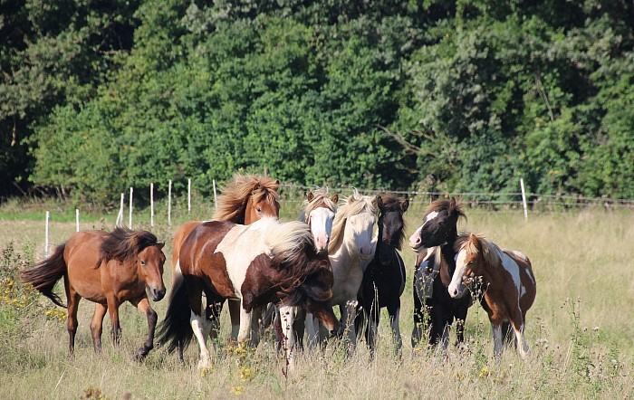
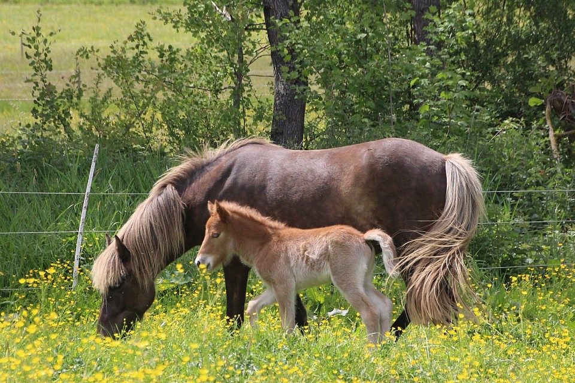

Restaurant & Hofcafé bei Brauneberg
Raus an die Mosel.
Rein in die Mühle.
Frisch gekochte regionale Küche, Kuchen aus eigener Herstellung und ein Platz im Grünen, an dem man gerne länger bleibt.
Eine restaurierte Wassermühle
Ein Ausflugsziel
mit eigenem Charakter.
Zwischen Brauneberg und Burgen liegt die Jungenwaldmühle ruhig in der Wiesenlandschaft. Drinnen knistert im Winter der Kamin, draußen sitzt man unter Bäumen – und gleich nebenan leben die Islandpferde.

Aus Küche und Backstube
Frisch gekocht.
Selbst gebacken.
Christian Böhm kocht frisch und regional. Konditormeister Peter Böhm backt Kuchen und Torten im Haus. Britta Böhm sorgt im Service dafür, dass aus einem Essen ein guter Aufenthalt wird.
Restaurant entdecken
Was diesen Ort unverwechselbar macht
Die Pferde gehören zur Mühle.
Der Ponyhof und die Islandpferde sind kein Dekor, sondern Teil des Lebens hier. Familien können Pferde erleben; Reitinteressierte und Pferdefreunde finden eigene, persönlich abgestimmte Angebote.
12. & 14. Oktober 2026 Tagesfreizeit „Rund um das Pferd“ Herbstferien · ab 6 Jahren · Termin ansehen →

Ihr Besuch
Heute lieber Mühle
als Moseltrubel?
April–OktoberSa–Di · 11:30–21:00
November–MärzSa–So · 11:30–21:00
Warme Küche12:00–19:30
AdresseJungenwaldmühle 1 · Brauneberg